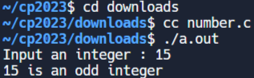

練習一 <<
Previous Next >> c_ex
Exercises
https://www.w3resource.com/c-programming-exercises/自選 10 個練習範例
01.編寫一個 C 程序，將指定的日期轉換為年、週和日。
註：忽略閏年。
程式:
#include <stdio.h>
int main()
{
int days, years, weeks;
days = 1329; // 總天數
// 將天數轉換為年、週和天
years = days / 365; // 計算年
weeks = (days % 365) / 7; // 計算週
days = days - ((years * 365) + (weeks * 7)); // 計算剩餘的天數
// 輸出結果
printf("Years: %d\n", years); // 年
printf("Weeks: %d\n", weeks); // 週
printf("Days: %d \n", days); // 天
return 0;
}
測試資料：
天數：1329
預期輸出：
年：3
週：33
天：3
02.寫一個 C 程序，接受使用者提供的兩個整數併計算這兩個整數的乘積。
程式:
c
Copy code
#include <stdio.h>
int main()
{
int x, y, result; // 宣告兩個整數和它們的乘積的變數
// 提示用戶輸入，並將輸入的值存儲在 'x' 中
printf("\n輸入第一個整數：");
scanf("%d", &x);
// 提示用戶輸入，並將輸入的值存儲在 'y' 中
printf("\n輸入第二個整數：");
scanf("%d", &y);
result = x * y; // 計算 'x' 和 'y' 的乘積
// 輸出乘積的結果
printf("上述兩個整數的乘積 = %d\n", result);
return 0; // 表示程式執行成功的返回值
}
測試資料：
輸入第一個整數：58
輸入第二個整數：69
預期輸出：
以上兩個整數的乘積 = 4002
03.寫一個計算球體體積的 C 程式。
程式:
#include <stdio.h> // 匯入標準輸入/輸出的標頭檔。
float myradius; /* 球體的半徑 */
float myvolume; /* 球體的體積（待計算） */
char line_text[50]; /* 從鍵盤輸入的一行文字 */
/* 圓周率π的值到小數點後50位，取自維基百科 */
const float PI = 3.14159265358979323846264338327950288419716939937510;
int main() {
printf("輸入球體的半徑："); // 提示使用者輸入球體的半徑。
fgets(line_text, sizeof(line_text), stdin); // 從使用者讀取一行輸入，並將其存儲在 'line_text' 中。
sscanf(line_text, "%f", &myradius); // 將 'line_text' 中的輸入轉換為浮點數，並將其存儲在 'myradius' 中。
myvolume = (4.0 / 3.0) * PI * (myradius * myradius * myradius); /* 使用公式計算球體的體積。 */
printf("球體的體積為 %f。\n", myvolume); // 輸出計算得到的球體體積。
return(0); // 返回0以表示程式執行成功。
}
測試資料:
輸入球體的半徑：2.56
預計輸出:
球體的體積為 70.276237。
04.用 C 語言編寫一個程序，讀取名字、姓氏和出生年份，並依序顯示姓名和年份。
程式:
#include <stdio.h> // 包含標準輸入/輸出標頭檔。
int main() {
char firstname[20], lastname[20]; // 宣告字元陣列，用於存儲名字和姓氏，每個最大長度為20個字元。
int bir_year; // 宣告一個整數變數 'bir_year' 來存儲出生年份。
printf("輸入您的名字："); // 提示使用者輸入他們的名字。
scanf("%s", firstname); // 讀取並將使用者的輸入存儲在 'firstname' 中。
printf("輸入您的姓氏："); // 提示使用者輸入他們的姓氏。
scanf("%s", lastname); // 讀取並將使用者的輸入存儲在 'lastname' 中。
printf("輸入您的出生年份："); // 提示使用者輸入他們的出生年份。
scanf("%d", &bir_year); // 讀取並將使用者的輸入存儲在 'bir_year' 中。
printf("%s %s %d\n", firstname, lastname, bir_year); // 輸出名字、姓氏和出生年份。
return 0; // 返回0以表示程式執行成功。
}
測試資料:
輸入您的名字：Chen
輸入您的姓氏：Anjin
輸入您的出生年份：2004
Chen Anjin 2004

05.如果給定兩個角，請寫一個 C 程式來求三角形的第三個角。
程式:
#include <stdio.h>
int main()
{
int ang1, ang2, ang3; /* 分別是三角形的三個角度 */
/* 從使用者讀取兩個三角形的角度，以逗號分隔 */
printf("輸入兩個三角形的角度，用逗號分隔：");
scanf("%d, %d", &ang1, &ang2);
ang3 = 180 - (ang1 + ang2); /* 計算第三個角度 */
printf("三角形的第三個角度：%d\n", ang3);
return 0;
}
測試資料：
輸入以逗號分隔的三角形的兩個角：50,70
三角形的第三個角：60
06.寫一個C 程式來檢查給定的數字是偶數還是奇數
程式:
#include <stdio.h> // 包含標準輸入/輸出標頭檔。
void main()
{
int num1, rem1; // 宣告兩個整數變數 'num1' 和 'rem1'。
printf("輸入一個整數："); // 提示使用者輸入一個整數。
scanf("%d", &num1); // 讀取並將使用者的輸入存儲在 'num1' 中。
rem1 = num1 % 2; // 計算 'num1' 除以 2 的餘數。
if (rem1 == 0) // 檢查餘數是否等於 0。
printf("%d 是偶數\n", num1); // 輸出一條消息，指示 'num1' 是偶數。
else
printf("%d 是奇數\n", num1); // 輸出一條消息，指示 'num1' 是奇數。
}
測試資料：15
15 是奇數

07.寫一個 C 程式來找出給定年份是否為閏年。
程式:
#include <stdio.h> // 包含標準輸入/輸出標頭檔。
void main()
{
int chk_year; // 宣告一個整數變數 'chk_year'。
printf("輸入一個年份："); // 提示使用者輸入一個年份。
scanf("%d", &chk_year); // 讀取並將使用者的輸入存儲在 'chk_year' 中。
if ((chk_year % 400) == 0) // 檢查 'chk_year' 是否能被400整除且沒有餘數。
printf("%d 年是閏年。\n", chk_year); // 輸出一條消息，指示 'chk_year' 是閏年。
else if ((chk_year % 100) == 0) // 檢查 'chk_year' 是否能被100整除且沒有餘數。
printf("%d 年不是閏年。\n", chk_year); // 輸出一條消息，指示 'chk_year' 不是閏年。
else if ((chk_year % 4) == 0) // 檢查 'chk_year' 是否能被4整除且沒有餘數。
printf("%d 年是閏年。\n", chk_year); // 輸出一條消息，指示 'chk_year' 是閏年。
else
printf("%d 年不是閏年。\n", chk_year); // 輸出一條消息，指示 'chk_year' 不是閏年。
}
測試資料：2023
2023年不是閏年。
08.寫一個 C 程式來找出三個數中最大的一個。
程式:
#include <stdio.h> // 包含標準輸入/輸出標頭檔。
void main()
{
int num1, num2, num3; // 宣告三個整數變數 'num1'、'num2' 和 'num3'。
printf("輸入三個數字的值："); // 提示使用者輸入三個數字。
scanf("%d %d %d", &num1, &num2, &num3); // 讀取並將使用者的輸入存儲在 'num1'、'num2' 和 'num3' 中。
printf("第一個數字 = %d，\t第二個數字 = %d，\t第三個數字 = %d\n", num1, num2, num3); // 輸出 'num1'、'num2' 和 'num3' 的值。
if (num1 > num2) // 檢查 'num1' 是否大於 'num2'。
{
if (num1 > num3) // 如果 'num1' 也大於 'num3'。
{
printf("第一個數字是三個數字中最大的。\n"); // 輸出一條消息，指示 'num1' 是最大的。
}
else
{
printf("第三個數字是三個數字中最大的。\n"); // 輸出一條消息，指示 'num3' 是最大的。
}
}
else if (num2 > num3) // 如果 'num1' 不是最大的，檢查 'num2' 是否大於 'num3'。
printf("第二個數字是三個數字中最大的。\n"); // 輸出一條消息，指示 'num2' 是最大的。
else
printf("第三個數字是三個數字中最大的。\n"); // 如果上述條件都不滿足，則 'num3' 必須是最大的。
}
測試數據：12 25 52
預期輸出：
第一個數字 = 12，第二個數字 = 25，第三個數字 = 52
第三個數字是三個數字中最大的
09.寫一個C 程式來檢查三角形是等邊三角形、等腰三角形還是不等邊三角形。
程式:
#include <stdio.h> // 包含標準輸入/輸出標頭檔。
int main()
{
int sidea, sideb, sidec; // 宣告變數用於三角形的三邊。
/*
* 讀取三角形的所有邊長
*/
printf("輸入三角形的三個邊長: "); // 提示使用者輸入。
scanf("%d %d %d", &sidea, &sideb, &sidec); // 讀取並存儲三角形的邊長。
if(sidea==sideb && sideb==sidec) // 檢查是否三邊長都相等。
{
printf("這是一個等邊三角形。\n"); // 輸出等邊三角形的訊息。
}
else if(sidea==sideb || sidea==sidec || sideb==sidec) // 檢查是否有兩邊長相等。
{
printf("這是一個等腰三角形。\n"); // 輸出等腰三角形的訊息。
}
else // 如果沒有邊長相等。
{
printf("這是一個不等邊三角形。\n"); // 輸出不等邊三角形的訊息。
}
return 0;
}
測試資料：
50 50 60
預期輸出：
這是一個等腰三角形。
10.寫一個 C 程式來計算交易的損益。
程式:
#include <stdio.h> // 包含標準輸入/輸出標頭檔。
void main()
{
int cprice, sprice, plamt; // 宣告變數來存儲成本價格、售價和利潤/損失金額。
printf("輸入成本價格: "); // 提示使用者輸入成本價格。
scanf("%d", &cprice); // 讀取並存儲成本價格。
printf("輸入售價: "); // 提示使用者輸入售價。
scanf("%d", &sprice); // 讀取並存儲售價。
if(sprice > cprice) // 檢查售價是否大於成本價格。
{
plamt = sprice - cprice; // 計算利潤金額。
printf("\n您可以預定您的利潤金額: %d\n", plamt); // 輸出利潤消息。
}
else if(cprice > sprice) // 檢查成本價格是否大於售價。
{
plamt = cprice - sprice; // 計算損失金額。
printf("\n您遭受了損失金額: %d\n", plamt); // 輸出損失消息。
}
else // 如果既沒有利潤也沒有損失。
{
printf("\n您處於無利潤、無損失的狀態。\n"); // 輸出無利潤、無損失的消息。
}
}
測試資料：
500 700
預期輸出：
您可以預訂您的利潤金額： 200 點
練習一 <<
Previous Next >> c_ex